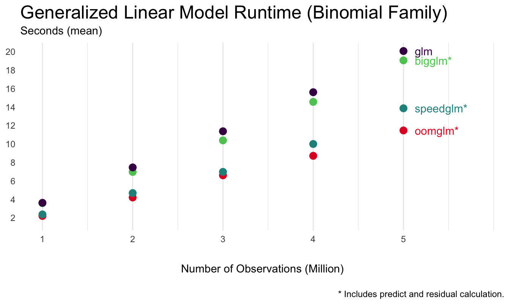

Benchmarking
benchmark.RmdThis benchmark consists of fitting a linear model with 50 total covariates over N observations where N ranges from 2M to 10M. The code is available here.
The functions benchared against are lm(), biglm() from the package biglm, and speedlm() from the package speedglm.
Ubounded In-Memory
In this scenario each function fits an in-memory tibble having N observations.
Memory Allocated

oomlm() is consistently twice as fast as lm() while using half the memory. The reson for this is that lm() front loads calculations of predicted values and residuals. When including prediction and residual calculations the memory and speed improvements of oomlm() are less dramatic.